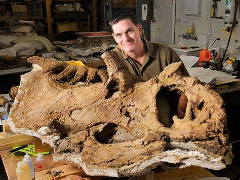

San Joaquin Valley Town is a non-profit organization that this run by an all-volunteer board of directors. Our mission is to bring nationally and internationally renowned, thought-provoking speakers who inform, educate, and entertain our audiencel As one of our members told us:
"Each year I give a ticket package to each of our family members I think of it as the gift of knowledge...and that is priceless"What's 75 milion years old and brand spanking new? A teenage Utahceratops! Come to the Saroyan, armed with your best dinosaur roar, when Scott Sampson, Research Curator at the Utah Museum of Natural History, steps to the podium Sampson's research has focused on the ecology and evolution of late Cretaceous dinosaurs and he has conducted fieldwork in a number of countries in Africa.
